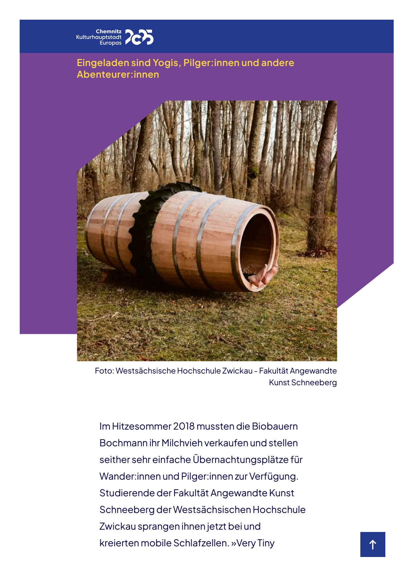

http://www.posthoernleinklackern.de | Das E >> Magazin nach dem Motto: »fake news as fake news.« | Werbung und Bewerbungen und Vorarbeiten der Firma: Chercheling - Beratung zu Nebenprodukten in Produktionsverwandtschaften | Joachim Schneider | Leipartstraße 12 | 81369 München | posthoernlein@e.mail.de
Chemnitzer Getränkemärkte wollen sonst keine der neuen ungesüßten Faßmalzbiere beitragen : Wirt von Riesenfaß-Übernachtungen grüßt die Werbezeitung Posthörnchen aus München mit einem Schlichtungsprojekt ! Der Faßwiesenwirt bietet nur noch Übernachtungen im Einzelfaß an und außer dem nachbarbelagerten Publizisten muss jeder Gast für dessen Werbezeitung ein Faß aufmachen, d.h. zur Bewerbung muss ein eigener Artikel nach dem Motto »fake news as fake news« entworfen und durch das Zapfloch beantragt werden. Und zwar zu irgendeinem aktuellen grob zerspitzelten Schimpf, falls man vorher sie und selber so abgedeckt oder angezapft hätte, und warum und wieso und auch wer, zur lebenslangen Nachbesserung bei Posthörnchen aber nur auf seine ausdrückliche Anfrage. Zum Winter werden alle teilnehmenden Fäßer zu einer Faßhütte für den Winter zusammengezimmert (Fäßer in Reihen verwandet mit genagelten nach außen gekehrten Faßhälften, ein Holzofen-Kamin aus drei Fäßern übereinander und ein Segeltuch-Kegel-Dach daran, das auf den Faß-Wänden absetzt), die man Posthörnchen zum Parkplatzmieten-Preis überlassen will ! Das Riesenfaßwiesen-Frühstücksmobil verkauft auch eigens gebastelte tragbare Elektromotor-Akku-Packs mit Steckdosen für Kofferrechner, Lampen etc. und vermietet Baustrom-Anschlüße mit Adaptern ! Buchenhainer und Wolfratshausener Förster loben »Pilot-Projekt« als hoffentlich einladender denn die Ast-Lauben dort !Quastenbommeltaschenklopferwirbel 195.28.2025 (14. Juli) | 275.40.2025 (2. Oktober) | 321.47.2025 (17. November) Nuszkullersprungfake news as fake news.Die Bessere Hälfte der Welt
Chemnitzer Getränkemärkte wollen sonst keine der neuen ungesüßten Faßmalzbiere beitragen : Wirt von Riesenfaß-Übernachtungen grüßt die Werbezeitung Posthörnchen aus München mit einem Schlichtungsprojekt ! Der Faßwiesenwirt bietet nur noch Übernachtungen im Einzelfaß an und außer dem nachbarbelagerten Publizisten muss jeder Gast für dessen Werbezeitung ein Faß aufmachen, d.h. zur Bewerbung muss ein eigener Artikel nach dem Motto »fake news as fake news« entworfen und durch das Zapfloch beantragt werden, und zwar zu irgendeinem aktuellen grob zerspitzelten Schimpf, falls man sie vorher so abgedeckt oder angezapft hätte, und warum und wieso und auch wer, zur lebenslangen Nachbesserung bei Posthörnchen aber nur auf seine ausdrückliche Anfrage. Zum Winter werden alle teilnehmenden Fäßer zu einer Faßhütte für den Winter zusammengezimmert (Faßreihen verwandet mit Faßvierteln und diese vernagelt mit Faßachteln, ein Holzofen-Kamin aus drei Fäßern übereinander und ein Segeltuch-Kegel-Dach daran ), die man Posthörnchen zum Parkplatzmieten-Preis überlassen will ! Das Riesenfaßwiesen-Frühstücksmobil verkauft auch eigens gebastelte tragbare Elektromotor-Akku-Packs mit Steckdosen für Kofferrechner, Lampen etc. ! Buchenhainer und Wolfratshausener Förster loben »Pilot-Projekt« als hoffentlich einladender denn die Ast-Lauben dort !Quastenbommeltaschenklopferwirbel 195.28.2025 (14. Juli) | 275.40.2025 (2. Oktober) | 321.47.2025 (17. November) Nuszkullersprungfake news as fake news.Die Bessere Hälfte der Welt

Fassung vom 257.38.2026 (14. September)